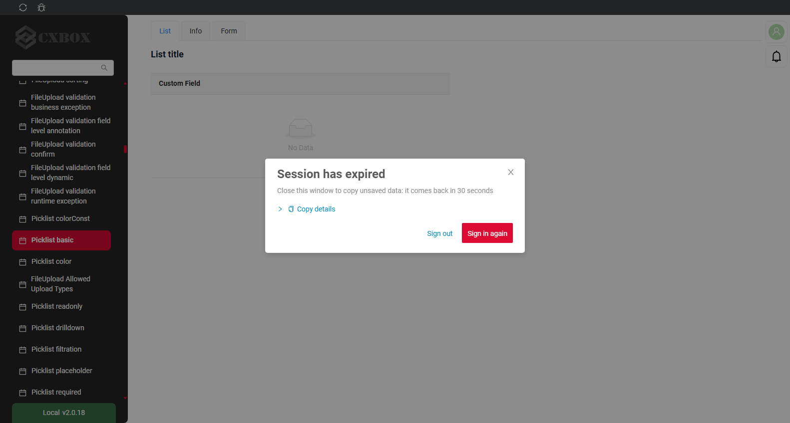
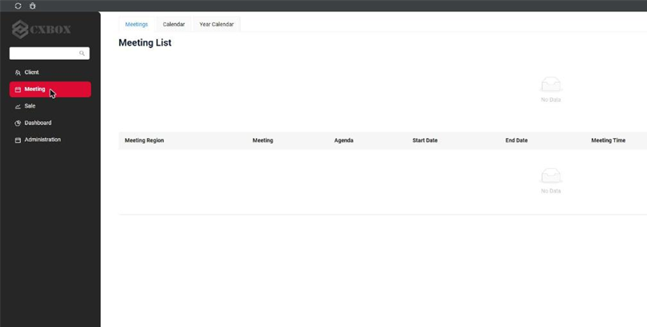
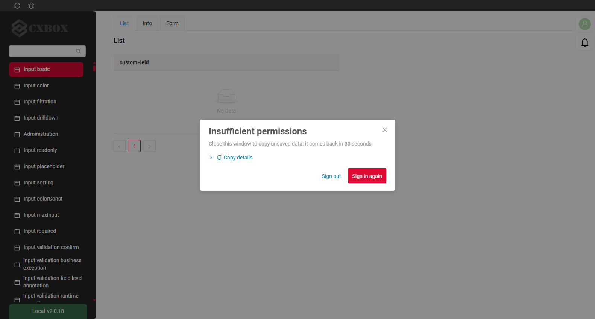
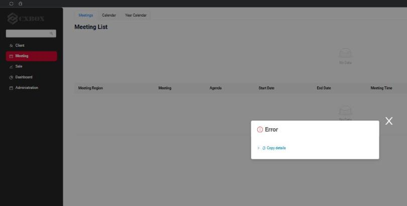
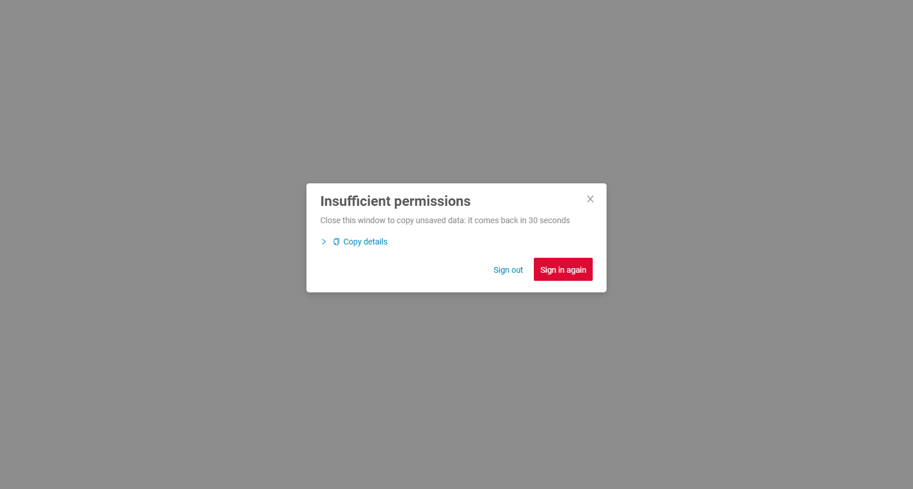
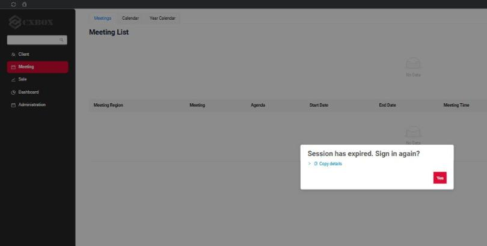
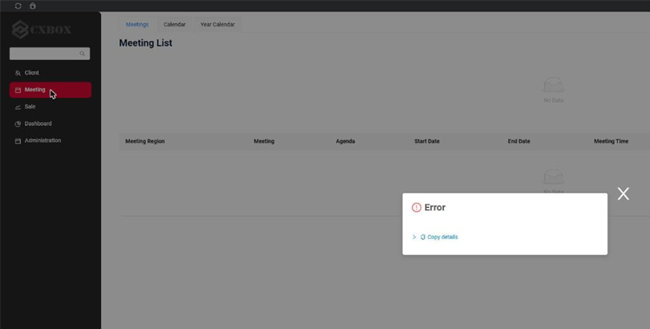
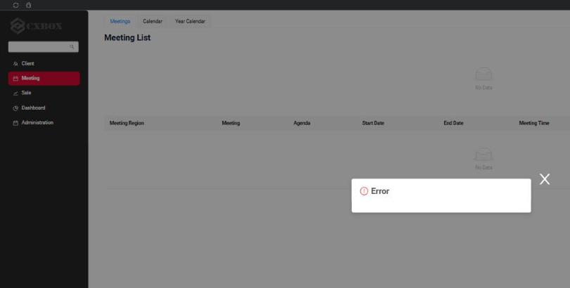
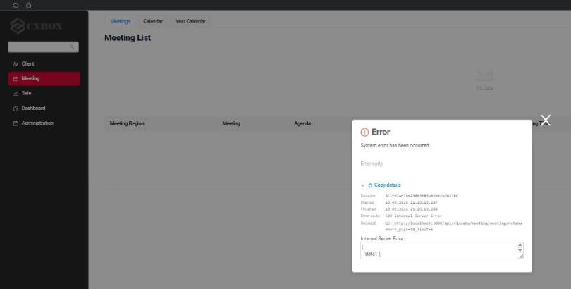
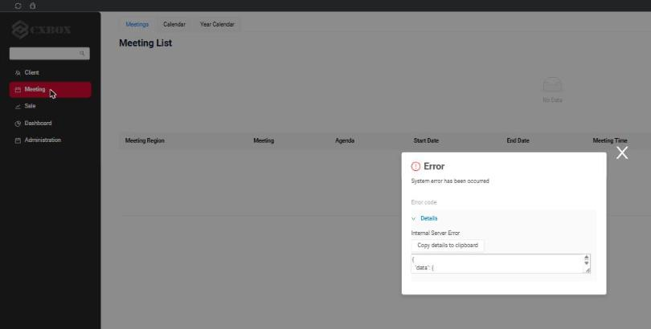

3.0.2
Key updates September 2026
CXBOX (Demo)
Added: Authorization - NEW popup on expired session/insufficient roles
When the backend answers 401 Unauthorized (the session has expired) or 403 Forbidden (the user has no roles), the user now sees a popup instead of empty widgets and endless spinners.
The popup has two buttons and a cross:
- Sign in again goes to the OIDC provider and back to the same screen. While the SSO session of the provider is alive, no password is asked. If it is over, the login page opens.
- Sign out does the same as the Log out button in the user menu.
- The cross closes the popup, so the user can copy unsaved data. The popup does not come back for 30 seconds (
AUTH_ERROR_SNOOZE_SECONDS), even if more requests fail. - If the OIDC provider is not reachable, both buttons leave the popup open and it says so. What the user has typed is not lost, and the user can try again.
Session has expired (401)
A popup is shown, every widget stays as it was.

The request silently failed, widgets were left empty and nothing explained what happened.

Insufficient permissions (403)
The popup names the reason.

An empty "Error" popup without any text.

Sign in of a user without roles
The same popup is shown when a user without roles signs in. The application has not loaded yet at this point, so there is nothing behind the popup but the empty start page.
The popup on the empty start page: Sign out lets the user sign in as someone else.

The application stayed on the loading spinner forever.
Configuration
Three constants in ui/src/constants/index.ts. They do not depend on each other, and the application works with any combination. The second and the third are the way back to the old behavior if something goes wrong at your OIDC provider.
| Constant | Values |
|---|---|
AUTH_ERROR_MODE |
soft (default): the popup can be closed with the cross. strict: no cross, the user either signs in again or signs out. |
USER_MANAGER |
rotationSafe (default): RotationSafeUserManager, see token renewal. original: UserManager of oidc-client-ts with the settings as before 3.0.2. The token is renewed only in the background, in every tab. A request with an expired token opens the popup. |
SIGN_IN_CALLBACK_DETECTION |
How the page learns at load that the OIDC provider returned the browser to it. oidcResponse (default): by the response of the provider in the URL, state with code or error. signInCallbackParam: by our sign_in_callback parameter from redirect_uri, as before 3.0.2. It stands after #, and a provider may drop it. |
USER_MANAGER and SIGN_IN_CALLBACK_DETECTION can also be switched for one browser, without a rebuild: the autotests compare the two values of each this way, and the support team can switch one user. Reload the page after it; removeItem() brings the build constant back.
localStorage.setItem('cxbox.userManager', 'original')
localStorage.setItem('cxbox.signInCallbackDetection', 'signInCallbackParam')
The popup with the cross.
The popup without the cross.

Fixed: Authorization - IMPROVED access token renewal: a refresh token is sent once, for all tabs and through F5
All tabs of the application in one browser share the stored user and therefore one refresh token (localStorage). With refresh token rotation in the OIDC provider (Keycloak Revoke Refresh Token, Blitz, Auth0, Okta; recommended by RFC 9700) a refresh token works once. A second use looks like theft: the provider rejects it and can close the whole session. The user sees 401 errors, and clearing the browser cache "helps".
oidc-client-ts does not protect against this. The issue is open since 2022: oidc-client-ts #430, the fix PR #434 was never merged, the same within one tab: #1618. Keycloak considers it the client's job: keycloak #16081.
- Before 3.0.2 the same refresh token was sent twice:
- by two tabs at the same moment: the background timer of
oidc-client-tsfires in every tab; - after F5 or a closed tab in the middle of a renewal: the new page sent the token that was already on its way;
- by the websocket of notifications, which called
signinSilent()on its own before every reconnect; - and an expired token was sent as is, because
getUser()does not renew anything: the backend answered 401 and the widgets were left empty.
- by two tabs at the same moment: the background timer of
- Since 3.0.2 the new class
RotationSafeUserManager(ui/src/auth/rotationSafeUserManager) is used instead ofUserManager. It extendsUserManager, overrides its methods and adds none. The folder depends only onoidc-client-tsand can be copied to any project as it is; seeREADME.mdin the folder.- The invariant. Each refresh token is sent to the provider at most once: for all tabs, after any page reload.
- The guard. Before a tab sends a refresh token, it writes a lock for this token to IndexedDB. The write is atomic for all tabs and survives F5 and a browser crash. A tab that finds the token locked sends nothing and takes the tokens that the sender stored.
- A burnt token. The token was sent, but no new tokens came: a refusal, a timeout, a lost answer, F5, a closed tab. Nobody knows if the provider used it, so it is never sent again. The session goes on with the SSO cookie of the provider, see the table below.
getUser()renews a token that expires within 5 seconds before it returns it, the waykeycloak.updateToken(5)did beforeoidc-client-ts. The request interceptor and the websocket take the token through it, nobody callssigninSilent()on its own.- The renewal ahead of expiry (60 seconds before) still starts in every tab, but the token is sent once.
- A Web Lock only lets a tab wait for the tab that is renewing. It is not the guard: without Web Locks (plain http) the token is still never sent twice.
- The websocket reconnects without a limit, the delay doubles after every failure up to 30 seconds (
maxReconnectDelayinui/src/constants/notification.ts). Without a valid token no handshake is sent: the popup is shown with the websocket request in its details, and the client tries again after the delay. - When a renewal fails, the browser console gets a warning, and the reasons go to Copy details of the popup, for example
Refresh token: invalid_grant. Hidden iframe: IFrame timed out without a response.
What the user sees:
| Scenario | The provider shares the site with the application (the hidden iframe works) | The provider is on another site |
|---|---|---|
| Two tabs renew at the same time | One tab sends the token, the other takes the result. Nothing is seen. | The same. |
| The provider is slow, the user presses F5 or closes the tab during a renewal | The token is burnt, the renewal goes through the hidden iframe. Nothing is seen. | The token is burnt. When the access token expires, the popup opens. Sign in again needs no password. |
| A network failure or a lost answer during a renewal | The same as above. | The same as above. |
| F5 during the sign in, while the code is exchanged for tokens | The sign in restarts by itself, no password. After 2 restarts in a row the popup opens, so a broken provider does not cause endless redirects. Before 3.0.2: an endless spinner. | The same. |
| The browser has no IndexedDB | The application creates the original UserManager for this browser, whatever USER_MANAGER says: the locks of RotationSafeUserManager live in IndexedDB. Copy details shows it as indexedDb: false. |
The same. |
Nothing in the application is switched off to test any of this. The UI tests in cxbox-code-samples provoke the races from the outside and read the refresh tokens out of the requests the browser really sent: the network of a tab is held or slowed down, a tab is frozen the way a browser freezes a background tab, the page is reloaded in the middle of a renewal, a refresh token is spent from the test itself. The same scenario runs with both values of USER_MANAGER and of SIGN_IN_CALLBACK_DETECTION, and the expected result of each value is written in the test (TokenRenewalAcrossTabsTest, SignInAgainPopupTest, WebSocketSessionTest).
Timings. Their ratio matters when a project tunes its OIDC provider:
- The token is renewed ahead of expiry 60 seconds before it expires (
accessTokenExpiringNotificationTimeInSeconds, the library default). getUser()renews a token that expires within 5 seconds.- A request with the refresh token waits for the answer up to 50 seconds (
SILENT_REQUEST_TIMEOUT_SECONDS), so it ends before the token expires. The other requests to the provider wait up to 60 seconds (OIDC_REQUEST_TIMEOUT_SECONDS). A renewal that ends by this timeout burns the token, so a stand with a slow provider may make both longer throughapp.oidc(silentRequestTimeoutInSeconds,requestTimeoutInSeconds), but cannot remove them. - The hidden iframe is given 30 seconds: it loads the page of the provider and then the application itself at
silent_redirect_uri. Where the provider forbids frames no answer comes at all. - The closed popup stays closed for 30 seconds (
AUTH_ERROR_SNOOZE_SECONDS).
Recommended limits for the OIDC provider (Keycloak names in brackets):
- Access token lifetime (Access Token Lifespan, demo containers: 2 minutes, demo.cxbox.org: 5 minutes): not less than 2 minutes. It has to stay well above the 60 second renewal margin, otherwise every freshly renewed token is already "expiring" and is renewed in a loop.
- Idle timeout of the session (SSO Session Idle, demo: 30 minutes) and the refresh token lifetime derived from it: longer than the access token lifetime. It is the time a user may stay idle before the next request ends in the popup.
- Refresh token rotation (Revoke Refresh Token, on in the demo containers): allowed, this release is about it.
- Signing keys of the realm (Realm settings - Keys): the realm needs an HMAC key for HS512, and not only the HS256 an older export may carry. Keycloak signs the cookie that restarts a login with it, and when the key is missing it makes one at the first sign in - several first sign ins at once each start making their own, the cookie signed in one state is verified against another, and the log fills with
cookie_not_foundandinvalid_codewhile the sign in hangs until its timeout. It cost the demo containers exactly that until the key was added to the realm export.
How to merge into a project
| What | How |
|---|---|
ui/src/auth/rotationSafeUserManager/, ui/src/auth/platformSession.ts, ui/src/components/AuthErrorPopup/, ui/src/components/ui/RequestErrorDetails/, ui/src/utils/requestErrorInfo.ts |
New files: copy. |
ui/src/auth/index.ts |
Auth.init builds one UserManager for callers that start together; USER_MANAGER chooses the class. The settings of the provider are as before. |
ui/src/api/index.ts |
The request interceptor is platformSession.authorizeRequest. |
ui/src/epics/session.ts |
ssoAuthEpic and logoutEpic call platformSession. New httpError401Epic and httpErrorDefaultEpic open the popup on 401 and 403. |
useNotificationClient.ts |
The handshake token comes from platformSession.authorizeWebSocketUrl. |
AppLayout.tsx, constants/index.ts, actions, reducers/session.ts, reducers/view.ts, ErrorPopup, i18n |
The popup is mounted, its state and texts, the three constants. |
Project code that calls Auth.getInstance().getUser() or signinSilent() |
Keeps working: the methods are overridden, not replaced. ESLint warns about an import of oidc-client-ts outside src/auth: a UserManager created by hand has no guard. |
Fixed: Authorization - IMPROVED user_roles db sync to roles from Keycloak/OIDC
When a user lost all roles in the OIDC provider, the roles were deactivated in the database on the next request, as before. But when the roles were returned in the OIDC provider, they stayed inactive in the database, because the comparison of token roles with database roles ignored the active flag. Now only active database roles take part in the comparison, so the roles are reactivated on the next login.
Added: Error popup - IMPROVED button 'Copy details'
Every error popup (the new 401/403 popup as well as the generic popup for business, system and network errors) now has a Copy details row:
- Copy details copies a JSON with everything the support team needs to find the request in the server log: session id (the same value is written to the SIEM log as
session: ...), current screen, view and browser URL, request method and URL, HTTP status, request start and finish time, response headers and body. The last lines say what the token renewal stands on in this browser (webLocks,indexedDb) and the three authorization constants it runs with. - The arrow expands the same details on screen, so a screenshot is enough to start the investigation: session id, start and finish time, error code and request. Opening the details copies them as well.
Generic error popup (a 400 response)
The details row is always visible.

The same error: an empty popup, nothing to copy or to show on a screenshot.

System error (a 500 response)
The details are expanded.

System error: only the response body was available under "Details".

The same Copy details row is present on the new popup for 401 and 403, see the before/after screenshots above.
Example of the copied JSON:
{
"sessionId": "3C1F67AF784230E3EB5DB594EA3B27EC",
"clientId": 1789057000000,
"login": "DEMO",
"location": "http://localhost:3000/#/screen/meeting",
"screen": "meeting",
"view": "meetinglist",
"statusCode": 403,
"statusText": "Forbidden",
"method": "GET",
"url": "http://localhost:3000/api/v1/data/meeting/meetingStats?_page=1&_limit=5",
"startedAt": "2026-09-10T18:26:00.410Z",
"finishedAt": "2026-09-10T18:26:00.757Z",
"responseHeaders": { "www-authenticate": "Bearer error=\"insufficient_scope\"" },
"responseBody": null,
"userAgent": "Mozilla/5.0 ...",
"webLocks": true,
"indexedDb": true,
"userManager": "rotationSafe",
"authErrorMode": "soft",
"signInCallbackDetection": "oidcResponse"
}
Fixed: Notifications - "Close all" button was always visible
The Close all button in the top right corner was visible even when there were no notifications: the stylesheet of the notifications container is loaded before the antd stylesheet, so the antd button style overrode the rule that hides the button. The rule is now more specific and the button is hidden until a notification appears.
Other Changes
CXBOX 5.0.3 (Core)
Added: Drilldowns with field-based filter – hint field
The drilldown filter builder has a new method fb.hint for fields having "type": "hint" in *.widget.json.
It filters the target view by part of the value, case-insensitive (same as for input).
buildRowDependentMeta
fields.setDrilldownWithFilter(
MyExampleDTO_.customFieldHint, DrillDownType.INNER, "/screen/MyExample/view/MyExamplelist/", fc ->
fc.add(
CxboxMyExampleController.myexample,
MyExampleDTO.class,
fb -> fb.hint(MyExampleDTO_.customFieldHint, fields.getCurrentValue(MyExampleDTO_.customFieldHint).orElse(null))
)
);